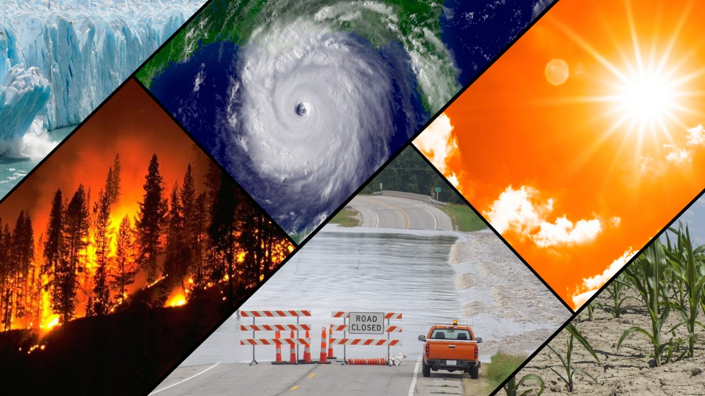
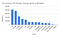
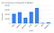
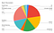
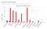

Words of Climate change in Medium
Example of Bart Roossien Energy writer on Medium


three days ago I have published an article about words metrics for medium writers and publications. This article was shown to …. and read by … persons from whom …. who asked me how to get such kind of measurements. I, unfortunately, can’t go into the explanation of the process for getting such kind of metrics but these few readership metrics are enough for me to know that people like you and …… need to have more granular metrics about words and articles published in Medium and may other like Medium publication platform. I had long time age the idea of building a data-driven platform about publishing that highlights key metrics that could help writers and content providers what topics and words matter for their audiences. This article I have written proved to me that there is a need for such kind of platform that I have already prototyped. Then I will try hard to finish the Minimum Viable platform for you to get these metrics but meantime I will share these metrics in articles like this one.
For today's article, I am presenting to you the coverage of the words of Climate change in Medium and I will use as an example the work of Bart Roossien for comparison with an average writer.

Here are the words of climate change that I have chosen with their respective volume of coverage.

You can see that if compared with the words of Technology and business that were the topics of the first article, the words of Climate change are way undercovered in Medium. here are the words of tech and business

While the words startup, marketing, and product are toping at levels higher than 4M words like Oil, Carbon and climate are ranging between 200K and 400k. Business and Technology have 10X more coverage in Medium than climate Change and I am asking myself if there is not an opportunity for a publication platform like Medium focused on Climate change.
But while Climate Change topics are undercover there are people like …. who especially write and publish articles about this topics what encouraged me to share some metrics about the articles of Bart Roossien and there are here


You can see that if it is about Climate Change Bart Roossien is way over the average Medium writer. I recall that there are +65,000 writers in Medium and the average writer metrics of a topic is computed using this number of writers.
If, like Bart Roossien, you want to get such kinds of metrics for your medium profile or your Medium publication I am open to share it with you while waiting for this data-driven platform that will serve this need to be published. Please use this form if you are interested.
Caring about climate change will allow us to better handle events like the one below
PS: This platform about writing metrics will be part of Book Dojo and is a feature of a broader platform called J……..K. which is about digital journalism.